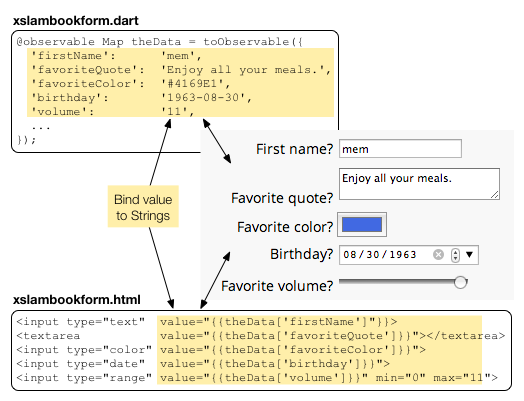

Get Input from a Form
Use forms to get data from users.
Many web applications rely on forms to collect data and submit that data to a server. A form usually contains several input elements for entering data of various kinds, such as names and addresses, birthdays, email addresses, and so on. HTML supports several kinds of input elements, including text fields, text areas, radio buttons, and checkboxes. HTML5 adds more specialized input elements such as email and password fields, color pickers, date and time widgets, and range elements.
The main example in this tutorial contains a client and a server. The client uses Polymer to present its user interface (a form with many kinds of input elements), and keep the interface in sync with Dart data. The client and server communicate using several classes from various Dart libraries, including streams, Futures, HttpRequest, and so on. The server uses CORS headers to allow cross-origin requests.
- About forms, generally
- About the slambook example, specifically
- Submitting a form
- Resetting a form
- Creating a server and listening on a port
- Handling OPTIONS requests
- Setting CORS headers
- Handling POST requests
- Recipe for client-server web apps
- Two-way data binding using Polymer
- Other resources
- What next?
About forms, generally
A form has an action, which is a URL to which to send the form data, and a method, which indicates how the form data is to be sent. The action and the method can be specified declaratively within HTML, or for more complex situations or for more control, you can write Dart code and use Dart libraries to perform the action programmatically.
Let’s begin with a basic, HTML-only form to learn a little bit about
action, method, input elements, and the default behavior of forms.
The form below uses Google to search the website
specified in the <form> tag
if the checkbox is selected
(or the web if it is not),
for the text entered by the user.
In this example,
called search_form,
the default is to search
dartlang.org
for “Cookbook”,
a useful resource for learning about Dart.
Here is the HTML code that creates the form:
<form action="http://www.google.com/search"
method="GET"
target="_blank">
...
</form>
Of interest are the action and method attributes.
| Attribute | Description |
|---|---|
| action | The URL to which to send the request. In this example, the URL specifies a Google search. When the user clicks the button, search parameters are appended to this URL. |
| method | How to send the request. In general, you should use GET to request data from a resource and POST to submit data to a server. |
And here is the HTML code that puts three input elements—a text field, a submit button, and a checkbox—into the form:
<input type="text" name="q"
value="Cookbook" size="31" maxlength="255">
<input type="submit" value="Google Search">
<label>
<input type="checkbox" name="sitesearch"
value="dartlang.org" checked> Search dartlang.org<br>
</label>
The checkbox is wrapped in a label so that you can click either the checkbox or the label to change the selection.
This HTML code provides some automatic behaviors.
- <input type="submit" ...>
- Creates a special button that when clicked, gathers the data from the form. Based on the action and method attributes, the button formulates the request and submits it to the server at the URL provided.
- name="q"
- name="sitesearch"
-
Specifies the name of the text field and the name of the checkbox.
Within a form, the input elements that have names provide the data for the form. In this example, the value of the text field provides the value for
q, and the checkbox provides the value forsitesearch, both part of a valid Google search URL. The name and its value are appended to the search URL when the user clicks the submit button. For example,http://www.google.com/search?q=Cookbook&sitesearch=dartlang.org
The example is purely declarative with no Dart or JavaScript code. Because its simple, it can use the default HTML form behavior, a publicly available and easily formed URL, and a basic GET request. For forms that contain a lot of data, or for web applications that communicate with a specialized server, you usually need to handle forms programmatically.
The next example shows a more complex form that sends data to a server programmatically using a POST request.
About the slambook example, specifically
The primary example in this tutorial consists of two programs.
-
First, a basic server program, called
slambookserver, listens on port 4040 on the local host and handles POST and OPTIONS requests by printing a message and sending a confirmation to the client. The server uses CORS headers to allow requests from applications running from a different origin. -
Second, the client program, called
slambook, provides a form into which users can enter some information. It uses Polymer two-way data binding to bind the input data to Dart variables. When the user clicks the submit button, the Dart code formats the data into a JSON string, sends an OPTIONS request to get permission from the server, and then a POST request to send the data. When the response from the server is ready, the client displays it.
The following diagram shows the flow of communication between the server and the client in this example.

Try it! Enter some data and push the Submit button.
The request gives you an innocent stare and displays “No server” because you are not running the server on your machine. Let’s fix that.
Run the server
Get the source code for the basic server program, slambookserver.dart, from the tutorials samples download.
Run the server program from the command line:
% dart slambookserver.dart Listening for GET and POST on http://127.0.0.1:4040
Now, you can try submitting data again with the slambook app above.
The rest of this tutorial explains the code for both the client and the server.
On the client side, you learn about
- Submitting the form
- Resetting the form
- Using Polymer to bind the form data to variables in the Dart program
On the server side, the sections cover
- CORS headers
- Handling OPTIONS requests
- Handling POST requests
Submitting a form
Let’s first take a look at how the data is submitted to the server.
Recall that the search_form example relies on the action and
method attributes to set the destination and method for the form request.
Recall also that the search_form example relies
on the automatic behavior of the special submit button.
The slambook example,
on the other hand,
takes explicit control of the form submission process.
- First, the form specifies no action or method.
- Second, the submit button has a Dart mouse click handler.
- Third, the mouse click handler prevents the automatic behavior of the submit button.
- Finally, the form submits the data to the server with help from the Dart libraries.
The form in the slambook example is
a custom element called tute-slambook-form
that’s instantiated with this HTML code:
<div class="container"> <form is="tute-slambook-form" id="slambookform"></form> </div>
Note the absence of either an action or a method attribute.
Instead, the behavior for the submit button is coded in a Dart
mouse click handler.
Below is the HTML code that creates the submit button
and binds it to a Dart mouse click handler.
<div class="submitarea">
<input type="submit" value="Submit" on-click="{{submitForm}}">
...
</div>
Here’s the code for the submitForm() mouse click handler:

Let’s walk through the click handler’s code.
Suppressing the default action
Even without an action and a method attribute,
the submit button has some automatic behavior,
which the slambook example does not need.
So the first line of code in
the mouse click handler calls e.preventDefault()
to suppress the default behavior of the submit button.
void submitForm(Event e) {
e.preventDefault(); // Don't do the default submit.
...
}
Setting up and making the POST request
Next, the code creates an
HttpRequest
object.
This code uses new to create an HttpRequest object,
which needs to be configured to make a POST request.
The HttpRequest class has a convenience function, getString(),
that you can use to make a basic GET request on a URL.
The next line provides the HttpRequest object with a callback function,
called onData,
that gets invoked when the server responds.
We’ll look at the implementation details for onData() later.
Important: You must register the callback function before making the request!
request = new HttpRequest();
request.onReadyStateChange.listen(onData);
var url = 'http://127.0.0.1:4040';
request.open('POST', url);
request.send(slambookAsJsonData());
Next, the code opens a POST request with a URL specifying the port and host on which slambookserver is listening.
Finally, the function sends the form data as a JSON string to the server. Sometimes, the data is streamed in chunks. But in this example, the data is short enough that all of the data is sent at once. This request is asynchronous, so the send() method returns as soon as the request is sent.
Listening for the server response
The HttpRequest object handles communication with the server.
You can get the state of that communication through
the HttpRequest object’s readyState field.
The ready state has five possible values:
unsent, opened, headers received, loading, and done.
When the ready state changes, HttpRequest fires an event,
and the onData() callback function gets called.
Recall the line of code that registers onData as a listener
on the onReadyStateChange event stream:
request.onReadyStateChange.listen(onData);
The only required argument to the listen() method is a callback function with this signature: void onData(T). The listen() method also lets you specify three optional arguments, such as an error handler.
The onData() callback function is straightforward:
void onData(_) {
if (request.readyState == HttpRequest.DONE &&
request.status == 200) {
// Data saved OK.
serverResponse = 'Server Sez: ' + request.responseText;
} else if (request.readyState == HttpRequest.DONE &&
request.status == 0) {
// Status is 0...most likely the server isn't running.
serverResponse = 'No server';
}
}
First the code checks whether the request is complete and successful.
If it is, the code puts the server’s response in a string,
called serverResponse, which is bound to the value of a textarea
in the slambook app’s UI.
When the string changes, the UI is automatically updated,
and the message is displayed for the user.
If the request is complete but unsuccessful,
the program sets serverResponse to an error message,
thus displaying it to the user.
Resetting a form
The reset button is a special HTML input type that, by default, clears the values of all inputs within the form. Instead, we want the button to reset the values in the form to their initial value. So, the mouse click handler for the reset button needs to suppress the automatic behavior and reset the form with neutral data explicitly.
void resetForm(Event e) {
e.preventDefault();
favoriteThings['kittens'] = false;
favoriteThings['raindrops'] = false;
favoriteThings['mittens'] = false;
favoriteThings['kettles'] = false;
theData['firstName'] = '';
theData['favoriteQuote'] = '';
theData['favoriteColor'] = '#FFFFFF';
theData['birthday'] = '2013-01-01';
theData['volume'] = '0';
theData['catOrDog'] = 'cat';
theData['music'] = 0;
theData['zombies'] = false;
serverResponse = "Data reset.";
}
Creating a server and listening on a port
Let’s turn our attention now to the server, called slambookserver,
that responds to HTTP requests from the slambook client.
The code for the server is based
on the one in Chris Buckett’s article
Using Dart with JSON Web Services.
The server listens on port 4040 on the local host and handles only POST and OPTIONS requests. For both types of requests, the server adds CORS headers to allow access. For POST requests, the server returns a short confirmation message that includes the JSON data it received in the request.
Let’s take a look at the code.
Below is the entire main() function for slambookserver. Using the HttpServer class, slambookserver starts listening on port 4040 on the local host by calling the top-level bind() function.
final HOST = '127.0.0.1';
final PORT = 4040;
void main() {
HttpServer.bind(HOST, PORT).then(gotMessage, onError: printError);
}
The bind() function returns a Future object,
which is a way to get a value in the future (more about that in a minute).
Using then(),
the code registers two callback functions on the Future.
The first, gotMessage(), is called when the Future returns its value.
The second, printError, is called if the binding fails.
An error might occur if, for example,
another program is already listening on the same port.
The code for gotMessage(), shown below, filters the request and calls other methods to handle each specific kind of request.
void gotMessage(_server) {
_server.listen((HttpRequest request) {
switch (request.method) {
case 'POST':
handlePost(request);
break;
case 'OPTIONS':
handleOptions(request);
break;
default: defaultHandler(request);
}
},
onError: printError); // Listen failed.
print('Listening for GET and POST on http://$HOST:$PORT');
}
To handle other types of requests
such as GET requests,
you could simply add more case statements,
such as case 'GET'.
About Futures, briefly
Let’s take a brief look at Futures before we check out the code for handling OPTIONS and POST requests.
A Future represents a way to get a value sometime in the Future. You use Futures to avoid blocking the program while waiting for a value—for example, if the value requires a long time to compute, or if the value must be read or retrieved using I/O.
When a function that returns a Future is invoked, two things happen:
- The function queues up work to be done and returns an uncompleted Future object immediately.
- Later, when the value is available, the Future object completes with that value or with an error.
To get the value that the Future represents, use the then() method to register a callback. When the Future completes, it calls the callback function.
In this example, both the client and server use Futures when sending requests and responses back and forth. Client-server programs should almost always handle communication and other forms of I/O asynchronously with Futures.
Handling OPTIONS requests
With help from the HttpRequest class, the slambook client makes a POST request when the user clicks the submit button. You saw the code for this earlier in this tutorial.
If the client is running from a different origin than the server, which is common in web apps, the POST request is “preflighted”. A preflighted request must first send an OPTIONS request to determine if the actual request is allowed. The HttpRequest class automatically handles the preflight OPTIONS request. You do not have to write the client-side code for that.
The server gets the OPTIONS request before it gets the preflighted request. Here’s the slambookserver code that handles OPTIONS requests.
void handleOptions(HttpRequest req) {
HttpResponse res = req.response;
addCorsHeaders(res);
print('${req.method}: ${req.uri.path}');
res.statusCode = HttpStatus.NO_CONTENT;
res.close();
}
The code is straightforward:
- Get the HttpResponse object, which carries the server’s response to the client.
- Add CORS headers to set access control
- Print a message to the console
- Indicate that the response has no content
- Close the response, thus sending the response to the client.
When the client gets the response, the CORS headers indicate that a POST request would be accepted.
Setting CORS headers
The server uses the following function to add CORS headers to its response to both OPTIONS and POST requests. The function adds three Access-Control headers to the server’s response (contained in an HttpResponse object).
void addCorsHeaders(HttpResponse res) {
res.headers.add('Access-Control-Allow-Origin', '*');
res.headers.add('Access-Control-Allow-Methods', 'POST, OPTIONS');
res.headers.add('Access-Control-Allow-Headers',
'Origin, X-Requested-With, Content-Type, Accept');
}
Together, the first two CORS headers allow POST and OPTIONS requests from any origin. The third specifies the kind of POST and OPTIONS requests the server accepts by specifying the headers that it allows.
For more information about CORS refer to:
Handling POST requests
Here is the function that handles the client’s HTTP POST request:
void handlePost(HttpRequest req) {
HttpResponse res = req.response;
print('${req.method}: ${req.uri.path}');
addCorsHeaders(res);
req.listen((List<int> buffer) {
// Return the data back to the client.
res.write('Thanks for the data. This is what I heard you say: ');
res.write(new String.fromCharCodes(buffer));
res.close();
},
onError: printError);
}
As with the OPTIONS request, slambookserver gets the HTTP response object from the request, prints a message to the console, and adds the CORS headers to the response.
Next the code listens for the data from the client’s POST request. When all the data is ready, the callback function gets called. The callback function is written in place as a function literal. The argument to the function, a list of integers, contains all of the data. Each integer is a character code, which can be a UTF-16 code unit or rune. You don’t need to worry about this, because you can just use the String.fromCharCodes() method to convert the list of character codes into a normal string.
The HttpResponse object manages a data stream that the server can use to send data back to the client. Within the data callback function, slambookserver writes a message and the original data as a string to that stream. A more sophisticated server would do something with the data, such as save it on the server, process it, and maybe remove funds from your bank account.
Upon closing the stream, the HttpResponse object sends the data to the client.
Recipe for client-server web apps
The slambook client-server example can serve as a starting point for your client-server web apps or as a recipe for building your own.
Here’s an outline of what the client needs to do.
- Use forms to gather data from a user.
- Put input fields in your forms for individual data items.
- Use Polymer two-way binding to keep the form data in sync with the Dart code.
- Send data declaratively (action and method attributes on the form)
- … or programmatically (overriding the default behavior of the submit button with Dart code)
- Get the response from the server from the HttpRequest object.
- Handle communication asynchronously with a Future object.
And, here’s what the server needs to do.
- Use HttpServer to set up a server to listen on a port and host.
- Listen for requests.
- Use CORS headers to set access permissions for each request.
- Respond to requests using HttpResponse.
- Handle communication asynchronously with Futures.
- Use streams to write the response data.
These resources, mostly from the core Dart libraries, provide support for writing clients and servers. Note that there are two HttpRequest classes, one in dart:html (for clients) and one in dart:io (for servers).
| Resource | Library | Description |
|---|---|---|
| HttpRequest | dart:html | Client-side HTTP request |
| HttpRequest | dart:io | Server-side HTTP request |
| HttpServer | dart:io | Server-side object to handle HTTP communication with clients |
| HttpResponse | dart:io | Server-side object to carry response to client requests |
| Streams | dart:async | A stream of data |
| Future | dart:async | A way to get a value asynchronously |
| JSON | dart:convert | The default implementation of a JSON converter |
| Polymer | Polymer | Custom elements, data binding, templates |
Two-way data binding using Polymer
The slambook sample uses Polymer’s two-way data binding to bind the values of input elements to Dart variables. If the user changes the value in an input element, the bound variable in the Dart code automatically changes. Or if the Dart code changes the value of the bound variable, the UI automatically updates. Define a Custom Element provides introductory details about Polymer and about data binding.
The example also uses declarative event handler mapping to hook event handler functions to input elements.
With the slambook example, you can see two-way data binding used with a variety of input elements, including new HTML5 elements. This table summarizes the two-way data binding attributes you can use with Polymer:
| Attribute | Dart type | Input element |
|---|---|---|
| value | String | any |
| selectedIndex | integer | a <select> element in which only one choice is allowed |
| checked | bool | individual radio buttons or checkboxes |
Using value with any input element
The value attribute works with any input element
and binds the value to a Dart string.
This example uses value with a text field, a text area,
a color picker, a date chooser, and a range element.

(Note that some surrounding code, such as that for the labels, has been removed for readability.)
A map called theData in the Dart code contains the data for the form.
The code marks the map object with @observable and calls toObservable()
to make the bindings.
The map contains a key-value pair for each input element,
where the key is a string.
The values for elements bound with value are all strings.
The HTML refers to the items in the map
using their Dart names (identifiers).
For example, the value of the color picker is bound to
theData['favoriteColor'].
Using selectedIndex with a pull-down menu
A <select> element contains one or more <option> elements,
only one of which, by default, can be selected at a time.
A single-select element is usually implemented as a pull-down menu.
You can use the selectedIndex attribute
to bind a Dart integer to a pull-down menu.
The integer indicates the index of the selected item.
Indices begin at 0.

Using checked with checkboxes
You can use the checked attribute
to bind a Dart boolean to a single checkbox.
Here each checkbox is bound to a separate boolean value within a map.

Other resources
- The code that handles the communication between the client and server is based on code written and explained by Chris Buckett in Using Dart with JSON Web Services.
- The previous tutorial, Fetch Data Dynamically, contains a more basic client program that relies on the server within Dart Editor (port 3030 on localhost), to serve the contents of a JSON file.
What next?
The next tutorial, Use IndexedDB, describes how to save data on the client in the browser’s Indexed Database.